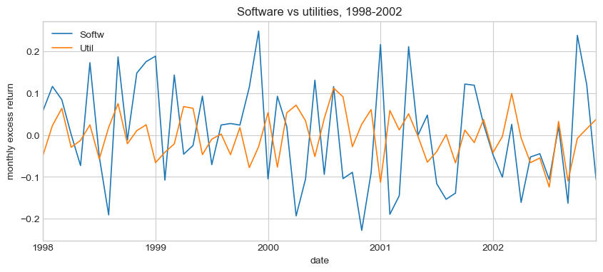
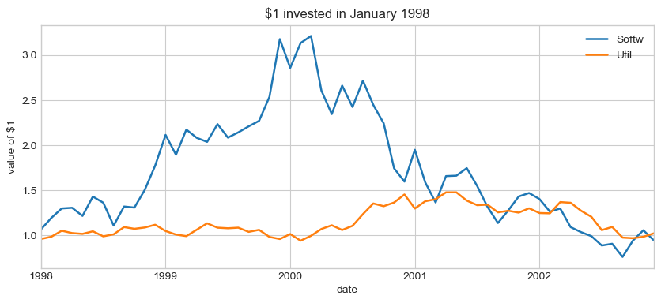

22.5. Assignment 1 — Solutions#
Every cell runs from top to bottom in Colab. Comments explain the lines that do the work; plotting code is commented in blocks.
Where a question asked you to predict first, the answer below gives the right prediction. Making yours before looking was the exercise.
22.6. Part 1 — Two ways a notebook will lie to you#
22.6.1. Q1 — Cells run in the order you run them, not the order they appear#
Run the next two cells in order. You should get 2,680.19.
deposit = 2000
rate = 0.05
years = 6
deposit * (1 + rate) ** years
2680.191281250001
Now, in the cell below, change the rate to 10% — and do not re-run anything above.
rate = 0.10
# Re-running ONLY the calculation cell. Python uses whatever `rate` holds in
# memory right now — 0.10 — not what is written in the cell above.
deposit * (1 + rate) ** years
3543.1220000000017
Go back and re-run only the deposit * (1 + rate) ** years cell.
(a) What number do you get now, and why is it not the 5% answer?
(b) Now scroll up and re-run the first cell, then the calculation cell again. What happens, and why?
(c) A notebook has an execution order and a visual order, and they are not the same thing. Describe, in one or two sentences, how this could produce a number in your final report that you cannot reproduce the next morning.
This is the single most common way a Jupyter result turns out to be wrong, and AI makes it worse rather than better — pasting a fix halfway up the notebook and re-running one cell is exactly the move that causes it.
(a) 3,543.12. The calculation uses the value of rate currently in
memory, and the last cell to set it said 0.10. Where a cell sits on the page
doesn’t matter; when it last ran does.
(b) Re-running the first cell sets rate back to 0.05, so the calculation
returns 2,680.19 again. Whichever cell ran last wins.
(c) If you change a value in a later cell and re-run an earlier calculation, the number you copy into your report depends on the order you clicked. The next morning, “Restart and run all” runs the cells top to bottom — a different order — and gives a different number.
22.6.2. Q2 — Code that runs, returns a plausible number, and is wrong#
You put $100 into a stock. It returns +15% in year one and −14% in year two. The cell below claims to compute what you end up with.
Do not fix it yet. First: look at it, and write down what you think it will print.
r1 = 0.15
r2 = -0.14
100 * 1 + r1 * 1 + r2 # <- what will this print?
100.01
(a) Your prediction, before running:
(b) Run it. What did it actually print? Is that number plausible as “$100 after two years”? Would you have caught it if it had appeared in the middle of a table?
(c) Fix it in the cell below, and state the correct final value.
# * is done before +, so the original line was (100*1) + (r1*1) + r2 = 100.01.
# Returns compound: each year multiplies the balance by (1 + that year's return).
round(100 * (1 + r1) * (1 + r2), 2) # round to cents
98.9
(a) Most people expect something near $99 or $101.
(b) It prints 100.01. As “$100 after two years” it looks perfectly plausible — which is the problem. In the middle of a table nobody would stop at it.
(c) $98.90. Up 15% and then down 14% loses money, because the 14% loss is taken on the bigger balance: 100 × 1.15 × 0.86.
22.7. Part 2 — Python worth knowing when the AI writes the code#
22.7.1. Q3 — Predict, then run#
Below are six statements. x = 2, y = 2, z = 4.
x > z # 1
x == y # 2
(x < y) and (x > y) # 3
(x < y) or (x > y) # 4
(x <= y) and (x >= y) # 5
True and ((x < z) or (x < y)) # 6
Write down your six answers first, as a list like [True, False, ...].
Then run them and compare. Note any you got wrong — and/or precedence is a
real source of silently wrong filters later in the course.
Predictions: [False, True, False, False, True, True]
x, y, z = 2, 2, 4
[x > z, # 1: 2 > 4 -> False
x == y, # 2: == compares (a single = stores) -> True
(x < y) and (x > y), # 3: False and False -> False
(x < y) or (x > y), # 4: False or False, since x == y -> False
(x <= y) and (x >= y), # 5: True and True -> True
True and ((x < z) or (x < y))] # 6: True and (True or False) -> True
[False, True, False, False, True, True]
22.7.2. Q4 — Data does not arrive as numbers#
You are handed a price as "$6.50". Python sees a string, and "$6.50" * 2
gives you "$6.50$6.50" rather than 13.
Turn it into the float 6.5. Then say in one sentence what would happen if a
column of a thousand prices had this problem and you took its mean.
import pandas as pd
price = "$6.50"
clean = price.replace("$", "") # remove the dollar sign; "6.50" is still text
value = float(clean) # turn the text into a number
print(value, value * 2) # 6.5 13.0
# The same fix for a whole column of prices
prices = pd.Series(["$6.50", "$7.00", "$5.25"])
# prices.mean() would raise a TypeError: the column holds text, not numbers
fixed = prices.str.replace("$", "", regex=False).astype(float) # .str applies it to every row
print(fixed.mean())
6.5 13.0
6.25
What happens to the mean: the column is stored as text, so .mean() fails
with a TypeError — pandas tries to glue the strings together and can’t turn
the result into a number. The quieter failure is worse: forcing it with
pd.to_numeric(..., errors='coerce') turns every price into NaN without
complaint, and whatever you compute next is built on nothing.
22.7.3. Q5 — Why logs show up everywhere in finance#
There is a trick worth knowing: for numbers close to 1, the percent change \((x-y)/y\) is well approximated by the difference in logs, \(\log x - \log y\).
Verify it with the numbers below — compute both and compare. Then try it again
with x = 2.0, y = 1.0 and report how well the approximation holds.
One sentence: when is it safe to use, and when is it not?
import numpy as np
x, y = 1.05, 1.02
pct = (x - y) / y # percent change
lg = np.log(x) - np.log(y) # difference in logs
print(f"x=1.05, y=1.02: percent change {pct:.5f} log difference {lg:.5f}")
x, y = 2.0, 1.0
pct = (x - y) / y
lg = np.log(x) - np.log(y)
print(f"x=2.0, y=1.0 : percent change {pct:.5f} log difference {lg:.5f}")
x=1.05, y=1.02: percent change 0.02941 log difference 0.02899
x=2.0, y=1.0 : percent change 1.00000 log difference 0.69315
When it holds, and when it breaks: for small changes the two agree — 2.94% against 2.90%. For large ones they don’t: doubling is a 100% change but a log change of only 0.69. Safe for monthly returns of a few percent; not for a stock that doubles or halves.
22.8. Part 3 — Real data, which does not want to help you#
Everything from here uses one Excel file: 49 US industry portfolios from Ken French, monthly, going back to 1926, plus a sheet with the market return and the risk-free rate.
https://raw.githubusercontent.com/amoreira2/UG54/refs/heads/main/assets/data/Assignment1.xlsx
Download it and open it in Excel before you write any code. Ten seconds of looking will save you an hour. This is a habit, not a suggestion.
import numpy as np
import pandas as pd
import matplotlib.pyplot as plt
%matplotlib inline
plt.style.use('seaborn-v0_8-whitegrid')
plt.rcParams['figure.figsize'] = [10, 4]
URL = ("https://raw.githubusercontent.com/amoreira2/UG54/"
"refs/heads/main/assets/data/Assignment1.xlsx")
pd.ExcelFile(URL).sheet_names
['Market_proxy', '49_Industry_Portfolios']
22.8.1. Q6 — Load it, and count the columns#
Read the 49_Industry_Portfolios sheet. The real column names are not in
the first row — there are several lines of description above them, so you will
need skiprows.
Then answer this before going further: how many columns did you get?
(a) How many columns are there, and how many industries were you promised?
(b) Print the column names. Some of them end in
.1and.2. What has happened, and what would you have computed if you had just averaged everything?(c) Keep only the block you actually want — the value-weighted returns — and say how you know it is the right one.
# The industry names are on the 7th row of the sheet: skip the six lines above
raw = pd.read_excel(URL, sheet_name='49_Industry_Portfolios', skiprows=6)
print(raw.shape)
print(list(raw.columns))
(1069, 152)
['Unnamed: 0', 'Agric', 'Food', 'Soda', 'Beer', 'Smoke', 'Toys', 'Fun', 'Books', 'Hshld', 'Clths', 'Hlth', 'MedEq', 'Drugs', 'Chems', 'Rubbr', 'Txtls', 'BldMt', 'Cnstr', 'Steel', 'FabPr', 'Mach', 'ElcEq', 'Autos', 'Aero', 'Ships', 'Guns', 'Gold', 'Mines', 'Coal', 'Oil', 'Util', 'Telcm', 'PerSv', 'BusSv', 'Hardw', 'Softw', 'Chips', 'LabEq', 'Paper', 'Boxes', 'Trans', 'Whlsl', 'Rtail', 'Meals', 'Banks', 'Insur', 'RlEst', 'Fin', 'Other', 'Unnamed: 50', 'Unnamed: 51', 'Agric.1', 'Food.1', 'Soda.1', 'Beer.1', 'Smoke.1', 'Toys.1', 'Fun.1', 'Books.1', 'Hshld.1', 'Clths.1', 'Hlth.1', 'MedEq.1', 'Drugs.1', 'Chems.1', 'Rubbr.1', 'Txtls.1', 'BldMt.1', 'Cnstr.1', 'Steel.1', 'FabPr.1', 'Mach.1', 'ElcEq.1', 'Autos.1', 'Aero.1', 'Ships.1', 'Guns.1', 'Gold.1', 'Mines.1', 'Coal.1', 'Oil.1', 'Util.1', 'Telcm.1', 'PerSv.1', 'BusSv.1', 'Hardw.1', 'Softw.1', 'Chips.1', 'LabEq.1', 'Paper.1', 'Boxes.1', 'Trans.1', 'Whlsl.1', 'Rtail.1', 'Meals.1', 'Banks.1', 'Insur.1', 'RlEst.1', 'Fin.1', 'Other.1', 'Unnamed: 101', 'Unnamed: 102', 'Agric.2', 'Food.2', 'Soda.2', 'Beer.2', 'Smoke.2', 'Toys.2', 'Fun.2', 'Books.2', 'Hshld.2', 'Clths.2', 'Hlth.2', 'MedEq.2', 'Drugs.2', 'Chems.2', 'Rubbr.2', 'Txtls.2', 'BldMt.2', 'Cnstr.2', 'Steel.2', 'FabPr.2', 'Mach.2', 'ElcEq.2', 'Autos.2', 'Aero.2', 'Ships.2', 'Guns.2', 'Gold.2', 'Mines.2', 'Coal.2', 'Oil.2', 'Util.2', 'Telcm.2', 'PerSv.2', 'BusSv.2', 'Hardw.2', 'Softw.2', 'Chips.2', 'LabEq.2', 'Paper.2', 'Boxes.2', 'Trans.2', 'Whlsl.2', 'Rtail.2', 'Meals.2', 'Banks.2', 'Insur.2', 'RlEst.2', 'Fin.2', 'Other.2']
# The row just above the names labels each block of columns
labels = pd.read_excel(URL, sheet_name='49_Industry_Portfolios', header=None, skiprows=5, nrows=1)
labels.iloc[0].dropna() # the column position where each label sits
1 Average
2 Value
3 Weighted
4 Returns
5 --
6 Monthly
52 Average
53 Firm
54 Size
55 Monthly
103 Average BE/ME Annually
Name: 0, dtype: object
(a) 152 columns, for 49 industries: one date column, then three blocks of 49, with two empty columns between blocks.
(b) The same 49 names appear three times. A DataFrame can’t have two
columns with the same name, so pandas renames the repeats Agric.1, Agric.2,
and so on. The row above the names (printed below) says what the blocks are:
value-weighted returns, average firm size, and average book-to-market. Averaging
everything would mix monthly returns with firm sizes in millions of dollars and
book-to-market ratios.
(c) The first block, columns 1 to 49. Its label reads Average Value Weighted Returns — Monthly, and its numbers look like monthly returns in percent.
ind = raw.iloc[:, :50].copy() # position 0 = date, 1 to 49 = value-weighted returns
ind = ind.rename(columns={ind.columns[0]: 'date'}) # the date column arrived with no name ('Unnamed: 0')
print(ind.shape)
(1069, 50)
22.8.2. Q7 — Missing values that are not missing#
The header text says: “All missing values are indicated by -99.99 or -999.”
Find them and replace them with proper NaN. Then report what fraction of the
table was missing.
⚠️ If you skip this,
-99.99is a perfectly valid number and every mean, standard deviation and correlation you compute will quietly include it as a −99.99% monthly return. Nothing will error.
returns = ind.drop(columns='date') # everything except the date
n_bad = returns.isin([-99.99, -999]).sum().sum() # True counts as 1: total sentinel cells
ind = ind.replace([-99.99, -999], np.nan) # both codes become proper missing values
share = ind.drop(columns='date').isna().mean().mean() # mean of True/False = share missing
print(f"{n_bad:,} cells were -99.99 or -999")
print(f"{share:.1%} of the return table is missing")
2,877 cells were -99.99 or -999
5.5% of the return table is missing
22.8.3. Q8 — Dates and units#
Two more things stand between you and usable data.
Dates. The first column is an integer like 192607. Convert it to a proper
month-end date and make it the index. Month-end matters: these are monthly
returns, and later in the course you will merge them against other series that
are stamped at month end. A one-day mismatch silently drops every row.
Units. Print the mean of one industry. Is it a monthly return of 0.9%, or
90%? Convert so that a 1% return is stored as 0.01.
# 192607 -> text '192607' -> 1 July 1926 -> moved to the last day of that month
ind['date'] = pd.to_datetime(ind['date'].astype(str), format='%Y%m') + pd.offsets.MonthEnd(0)
ind = ind.set_index('date') # the dates become the row labels
# Before converting: Agric's mean is about 0.96 — that is 0.96% a month, not 96%
ind = ind / 100 # percent -> decimal, so a 1% return is 0.01
print(ind.index[:3])
print(f"mean monthly return, Agric: {ind['Agric'].mean():.5f}")
DatetimeIndex(['1926-07-31', '1926-08-31', '1926-09-30'], dtype='datetime64[ns]', name='date', freq=None)
mean monthly return, Agric: 0.00964
22.8.4. Q9 — Excess returns#
Load the Market_proxy sheet the same way — it has Mkt-RF and RF. Watch the
units here too.
Then build excess returns two ways:
For one industry,
Agric, subtractRFmonth by month. Print its mean.For all 49 at once, in a single line, producing a DataFrame called
inde.
🤖 Worth asking the AI: “subtract a Series from every column of a DataFrame, aligning on the index” — and then check that the row count did not change. Getting the axis wrong here produces a table full of NaN, or worse, a table that looks fine and is transposed.
mkt = pd.read_excel(URL, sheet_name='Market_proxy', skiprows=5) # this sheet's header is on the 6th row
mkt = mkt.rename(columns={mkt.columns[0]: 'date'})
mkt['date'] = pd.to_datetime(mkt['date'].astype(str), format='%Y%m') + pd.offsets.MonthEnd(0)
mkt = mkt.set_index('date') / 100 # percent here too
print(f"industries: {ind.index.min():%Y-%m} to {ind.index.max():%Y-%m}, {len(ind)} months")
print(f"market : {mkt.index.min():%Y-%m} to {mkt.index.max():%Y-%m}, {len(mkt)} months\n")
# 1. One industry. Subtracting two Series lines them up by date first.
agric_ex = (ind['Agric'] - mkt['RF']).dropna()
print(f"Agric mean excess return: {agric_ex.mean():.5f} per month")
# 2. All 49 at once.
rf = mkt['RF'].reindex(ind.index) # RF on exactly the industry months
inde = ind.sub(rf, axis=0) # axis=0: match rf to the ROWS (dates), not the columns
print(f"inde: {inde.shape} same rows as ind: {len(inde) == len(ind)}\n")
# The two traps from the hint
print("without the reindex :", ind.sub(mkt['RF'], axis=0).shape, "<- four extra months with no industry data")
print("with the wrong axis :", ind.sub(rf).shape, "<- dates matched against industry names: all NaN")
industries: 1926-07 to 2015-07, 1069 months
market : 1926-07 to 2015-11, 1073 months
Agric mean excess return: 0.00682 per month
inde: (1069, 49) same rows as ind: True
without the reindex : (1073, 49) <- four extra months with no industry data
with the wrong axis : (1069, 1118) <- dates matched against industry names: all NaN
22.8.5. Q10 — Dropping rows has a price#
Not every industry exists in 1926. To get a rectangular table where every industry covers the same months, drop the incomplete rows.
Report: how many months you had before, how many after, and what date the sample now starts.
(a) How many months did that cost you?
(b) You have just thrown away 40 years of data to keep 49 columns. Name one thing you might have done instead, and say what it would have cost.
full = inde.dropna() # keep only the months in which all 49 industries have a return
print(f"before: {len(inde)} months, from {inde.index.min():%Y-%m}")
print(f"after : {len(full)} months, from {full.index.min():%Y-%m}")
print(f"cost : {len(inde) - len(full)} months\n")
# Which industries force the late start? The first month each one has data:
first = ind.apply(lambda col: col.first_valid_index())
print(first[first > ind.index.min()].sort_values().dt.strftime('%Y-%m').to_string())
before: 1069 months, from 1926-07
after : 553 months, from 1969-07
cost : 516 months
PerSv 1927-07
Paper 1929-07
Rubbr 1930-07
Soda 1963-07
FabPr 1963-07
Guns 1963-07
Gold 1963-07
Softw 1965-07
Hlth 1969-07
(a) 516 months — 43 years. The sample now starts in July 1969, the first month Health has data.
(b) Drop columns instead of rows. Nine industries start after July 1926; without them you keep all 1,069 months, with 40 industries — but you lose Software, Health, Gold and Guns. A middle road: drop only Health and Software and keep 625 months from July 1963. Or keep the gaps and compute each statistic on whatever months exist — you keep everything, but different industries’ numbers then come from different periods and can’t be compared directly.
22.8.6. Q11 — The two objects everything else is built from#
Compute and display:
ERe— the vector of annualized mean excess returns, one per industryCovRe— the annualized covariance matrix of excess returns
If you have not met a covariance matrix. For 49 industries it is a 49×49 table. The diagonal entry \((i,i)\) is industry \(i\)’s variance — its volatility squared. The off-diagonal entry \((i,j)\) is the covariance between \(i\) and \(j\): positive when the two tend to move in the same direction, negative when one tends to rise as the other falls, near zero when neither tells you much about the other.
A correlation is that same covariance divided by the two volatilities, which rescales it to sit between −1 and +1. Same information, easier to read — which is why the question below asks you for correlations rather than raw covariances.
df.cov()builds the whole table in one call. Nothing in the next few weeks needs it. It comes back in Capital Allocation in October, where it is the object that decides how much of each thing to hold.
Report the highest and lowest average-return industries. Then print the correlation between three pairs of your choosing — pick one pair you expect to move together and one you expect not to, and say whether the data agreed.
Remember: means annualize by ×12, variances by ×12, volatilities by ×√12.
ERe = full.mean() * 12 # annualized mean excess return: one number per industry
CovRe = full.cov() * 12 # annualized 49x49 covariance matrix; variances on the diagonal
print("highest:", (ERe.nlargest(3) * 100).round(1).to_dict(), "% a year")
print("lowest :", (ERe.nsmallest(3) * 100).round(1).to_dict(), "% a year\n")
corr = full.corr() # the same information as CovRe, rescaled to lie between -1 and +1
for a, b in [('Banks', 'Insur'), ('Softw', 'Chips'), ('Gold', 'Banks')]:
print(f"corr({a}, {b}) = {corr.loc[a, b]:.2f}")
CovRe.iloc[:4, :4].round(4) # one corner of the matrix
highest: {'Smoke': 12.9, 'Fun': 10.9, 'Guns': 10.6} % a year
lowest : {'Other': 0.9, 'RlEst': 1.8, 'PerSv': 2.7} % a year
corr(Banks, Insur) = 0.81
corr(Softw, Chips) = 0.69
corr(Gold, Banks) = 0.12
| Agric | Food | Soda | Beer | |
|---|---|---|---|---|
| Agric | 0.0507 | 0.0167 | 0.0172 | 0.0184 |
| Food | 0.0167 | 0.0248 | 0.0206 | 0.0200 |
| Soda | 0.0172 | 0.0206 | 0.0533 | 0.0258 |
| Beer | 0.0184 | 0.0200 | 0.0258 | 0.0341 |
Highest and lowest: over July 1969 to July 2015, Tobacco (Smoke, 12.9% a
year), Entertainment (Fun, 10.9%) and Defense (Guns, 10.6%) earned the most;
Other (0.9%), Real Estate (1.8%) and Personal Services (2.7%) the least.
Pairs:
Banks and Insurance, expected to move together — both are financial firms exposed to the same rates and credit. Correlation 0.81: they do.
Software and Chips, expected together — the same tech cycle. 0.69.
Gold and Banks, expected to have little to do with each other. 0.12: nearly unrelated.
22.8.7. Q12 — Look at it#
Pick two industries that you think behaved very differently in some identifiable episode — a crisis, a boom, a technological shift.
Plot their monthly excess returns over that period.
Plot the cumulative return of $1 invested in each over that period.
In three or four sentences, say what happened, using the actual magnitudes from your plot. What would $1 have become in each?
📌 Cumulative returns compound:
(1 + r).cumprod(), notr.cumsum(). Adding returns is Lecture 1’s pitfall 4 and the error grows with horizon.
a, b = 'Softw', 'Util'
period = slice('1998-01', '2002-12') # the dot-com boom and bust
# 1 — monthly excess returns (plotting)
fig, ax = plt.subplots()
inde.loc[period, [a, b]].plot(ax=ax, linewidth=1.2)
ax.set_ylabel('monthly excess return'); ax.set_title('Software vs utilities, 1998-2002')
plt.show()
# 2 — growth of $1: compound the total returns month by month
growth = (1 + ind.loc[period, [a, b]]).cumprod()
# plotting
fig, ax = plt.subplots()
growth.plot(ax=ax, linewidth=1.8)
ax.set_ylabel('value of $1'); ax.set_title('$1 invested in January 1998')
plt.show()
after_peak = growth[a].loc[growth[a].idxmax():]
print(f"{a}: peak ${growth[a].max():.2f} in {growth[a].idxmax():%b %Y}, "
f"low ${after_peak.min():.2f} in {after_peak.idxmin():%b %Y}, ${growth[a].iloc[-1]:.2f} at the end")
print(f"{b}: best ${growth[b].max():.2f}, ${growth[b].iloc[-1]:.2f} at the end")


Softw: peak $3.21 in Mar 2000, low $0.76 in Sep 2002, $0.94 at the end
Util: best $1.47, $1.02 at the end
What happened: software rode the internet boom — $1 invested in January 1998 was worth $3.21 by March 2000, with single months of +25%. Then the bust took it down to $0.76 by September 2002, and it ended 2002 at $0.94: below where it started, after tripling along the way. Utilities barely took part in either: their best was $1.47, and they ended at $1.02. Same five years, and two industries that could hardly have had a more different ride.